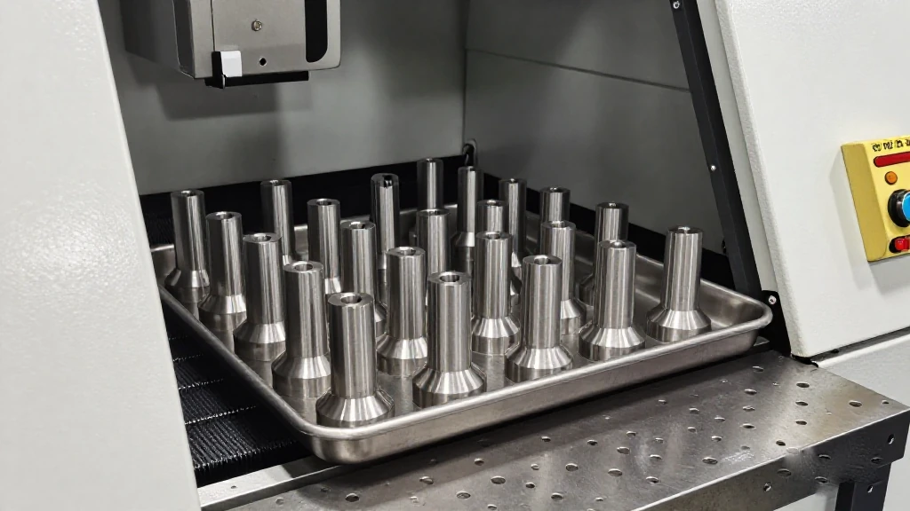
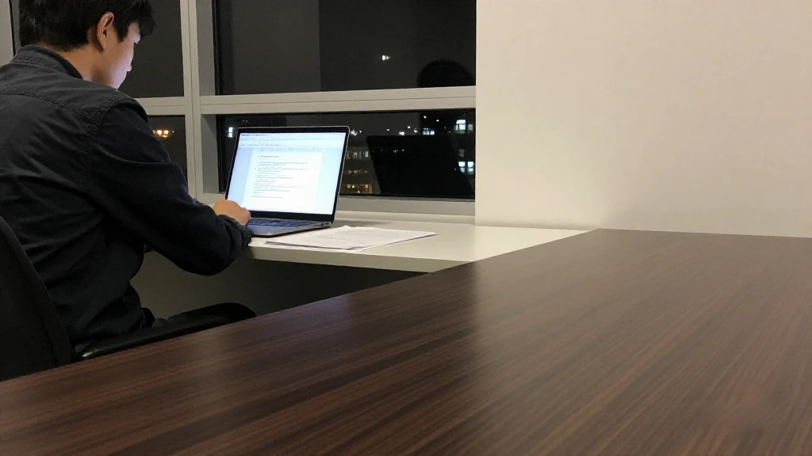

圖片由 AI輔助創作（Z-Image-Turbo）Image by AI (Z-Image-Turbo)
【鄭哥點評】欄目：鄭哥博客點評｜日期：2026-11-06
今朝五條，兩條講錢入企業，三條講政府開閘。墨芯半年再融近十億，強瑞十億半定增獲受理；另一邊小巨人獎補落袋、廣州開產學研認定、粵港聯合資助開報。兩種錢，兩套邏輯，我逐條拆。
圖片由 AI輔助創作（Z-Image-Turbo）Image by AI (Z-Image-Turbo)
一、墨芯半年再融近十億：稀疏推理芯片，賣嘅係慳卡慳電
十一月三日深夜《科創板日報》披露，墨芯人工智能（深圳）完成近十億元 C+ 輪，投資方有仁愛資本、海棠基金、東恆石油、比丘資本等。距上一輪近十億嘅 C 輪只有五個月，兩輪接近二十億。
墨芯二〇一八年成立，做 AI 推理芯片、計算卡同軟件。創辦人王維係卡內基梅隆電子與計算機工程碩士，做過高通、英特爾；聯合創辦人蘆勇出身 SK 海力士、Marvell。路線叫稀疏計算：算法先搵出多餘運算，再交芯片執行。已出 S4、S30、S40 三款卡，分別搭一、三、四顆自研 Antoum 芯片。
年底前計劃出 SP200 同 SECA 軟件棧。更值得睇係模式變化：由賣卡延伸到交付算力系統，同地方政府、算力中心合作建數據中心。公司稱第三季營收數倍增長，但冇披露金額同基期——基數唔講，說服力有限。
來源：科創板日報《AI 推理芯片再獲大額融資 墨芯 C+ 輪融了近 10 億元》，2026年11月3日｜https://m.cls.cn/detail/2524290

圖片由 AI輔助創作（Z-Image-Turbo）Image by AI (Z-Image-Turbo)
二、強瑞技術 10.5 億定增獲受理：一間深圳精密件公司嘅補血
十一月五日深交所受理深圳市強瑞精密技術向特定對象發行股票嘅申請，預計融資十億五千萬元。保薦國信證券，律所金杜，會計師中審眾環。
受理唔等於發行成功。後面仲有問詢、審核、註冊幾道關，任何一關都可以拖幾個月，甚至否掉。正確讀法係「流程開始」，唔係「十億半到手」。
但呢類公告有另一個用處：睇審核問詢問乜。募投項目點論證、新增產能點消化、毛利率同同業點比——呢啲問題早兩年寫計劃書就應該答得出，等到融錢先補，通常補唔切。
來源：新浪財經《強瑞技術定增申請獲深交所受理 10.5 億再融資邁關鍵一步》，2026年11月5日｜https://m.sohu.com/a/1097717519_122014422
圖片由 AI輔助創作（Z-Image-Turbo）Image by AI (Z-Image-Turbo)
三、深圳「小巨人」期初獎補落袋：免申即享，材料要自己上傳
深圳市中小企業服務局十一月二日下達二〇二六年中央中小企業發展專項資金第二輪第三批重點「小巨人」企業實施期初獎補計劃。企業要在十一月五日前喺「深i企」上傳《賬戶證明》《收款收據》《承諾函》，免申即享；逾期關門。
錢嘅用途圍繞「三新」同「一強」：新動能、新技術、新產品，加產業鏈配套能力。講白啲，獎你加大研發、做原創成果，同時鼓勵你貼住大廠供應鏈做配套。
呢筆係「實施期初」獎補，對象係已入圍名單嘅企業。未入嘅團隊唔好等運到，去翻下一批門檻同認定標準，逐項對自己。
來源：深圳市中小企業服務局《市中小企業服務局關於下達2026年中央中小企業發展專項資金第二輪第三批重點「小巨人」企業實施期初獎補資金資助計劃的通知》，2026年11月2日｜https://www.sz.gov.cn/cn/xxgk/zfxxgj/tzgg/content/post_13048624.html
圖片由 AI輔助創作（Z-Image-Turbo）Image by AI (Z-Image-Turbo)
四、廣州開閘：企業委託高校做研發，可認作市重點研發計劃項目
廣州市科技局十月二十日發指南，十一月二日開網上申報，常年受理。核心：在穗企業委託高校、科研機構、醫療衛生機構做研發，並完成技術合同認定登記，經審核可認作市重點領域研發計劃項目。
細節：申報單位係合同「賣方」，即高校一方；單份合同只認一個項目；市外註冊單位牽頭申報冇推薦環節。平台係「廣州科技GI」。
最實際嘅用法，係簽合同之前問清楚：能唔能認定、賣方願唔願配合。好多團隊做完研發才發現合同冇登記，白做。記住佢係「認定」唔係「撥款」——冇現金，但個名查得到，投標、報其他計劃都用得上。
來源：廣州市科學技術局《廣州市科學技術局關於發布重點研發計劃2026年度重點領域研發專題產學研合作項目認定立項方向申報指南的通知》，2026年10月20日｜https://www.gz.gov.cn/xw/tzgg/content/post_11060753.html
圖片由 AI輔助創作（Z-Image-Turbo）Image by AI (Z-Image-Turbo)
五、粵港聯合資助一百萬一項：前海、南沙、河套優先
橫琴產業發展局十一月二日轉發省科技廳通知：二〇二六年度粵港科技創新聯合資助開報。省科技廳同香港創新科技署同步發布、各自評審，兩邊同時立項就各自資助。每項一百萬元，為期兩年。
硬規矩：雙方要各自申報，單方無效；廣東牽頭單位嘅負責人要全職受聘；參與嘅廣東企業自籌經費不低於資助額。網上申報十月十二日至十二月十一日下午五點。
優先前海、南沙、河套。方向有新一代通信、半導體與集成電路、具身智能、高端裝備、AI 前沿技術、生物醫藥、新材料、低空經濟等。一百萬唔算多，「粵港聯合」四個字係信用背書。
來源：橫琴粵澳深度合作區產業發展局《橫琴粵澳深度合作區產業發展局轉發廣東省科學技術廳關於發布2026年度粵港科技創新聯合資助專題申報指南的通知》，2026年11月2日｜https://www.hengqin.gov.cn/macao_zh_hans/zwgk/tzgg/gg/content/post_3956064.html

圖片由 AI輔助創作（Z-Image-Turbo）Image by AI (Z-Image-Turbo)
六、鄭哥點評
今日五條，市場嘅錢追算力同硬件，財政嘅錢追「聯合」「配套」「認定」。兩邊口味唔同，但都要一樣嘢：查得到。
算力呢條線再補一句：賣卡最後拼唔係峯值算力，係遷移成本同運維。墨芯轉去做數據中心交付，就係知道客戶唔想自己搞適配。做唔做得成，睇明年現金流。
圖片由 AI輔助創作（Z-Image-Turbo）Image by AI (Z-Image-Turbo)
\[Zheng Ge's Take\] Column: Zheng Ge's blog commentary | Date: 2026-11-06
Two of today five stories are about money going into companies; three are about government schemes opening up. Moxin has raised close to RMB 1 billion again within six months and Qiangrui has had a RMB 1.05 billion placement accepted; on the other side, Little Giant grants have been paid out, Guangzhou has opened its industry-academia recognition and the Guangdong-Hong Kong fund is taking applications. Two kinds of money, two sets of logic. Let me take them one by one.
圖片由 AI輔助創作（Z-Image-Turbo）Image by AI (Z-Image-Turbo)
1. Moxin raises nearly RMB 1bn again in six months: sparse inference chips that save cards and power
Late on 3 November, Science and Technology Innovation Board Daily reported that Moxin AI (Shenzhen) had closed a C+ round of close to RMB 1 billion. Backers include Renai Capital, Haitang Fund, Dongheng Petroleum and Biqiu Capital. It is only five months since the previous C round, also close to RMB 1 billion, taking the two to nearly RMB 2 billion.
Founded in 2018, Moxin makes AI inference chips, accelerator cards and software. Founder Wang Wei holds a master in electrical and computer engineering from Carnegie Mellon and worked at Qualcomm and Intel; co-founder Lu Yong came from SK Hynix and Marvell. The approach is sparse computing: algorithms strip out redundant computation first, then the chip executes what remains. Three cards are shipping, the S4, S30 and S40, carrying one, three and four of its own Antoum chips.
By year end the company plans the SP200 card and the SECA software stack. More interesting is the model shift: from selling cards to delivering compute systems, building data centres with local governments and compute centres. The company says third-quarter revenue grew several-fold, but gave neither the amount nor the base. Without a base, that claim proves little.
Source: 科創板日報《AI 推理芯片再獲大額融資 墨芯 C+ 輪融了近 10 億元》，2026年11月3日 | https://m.cls.cn/detail/2524290
圖片由 AI輔助創作（Z-Image-Turbo）Image by AI (Z-Image-Turbo)
2. Qiangrui RMB 1.05bn placement accepted: a Shenzhen precision-parts maker tops up
On 5 November the Shenzhen Stock Exchange accepted an application by Shenzhen Qiangrui Precision Technology to issue shares to specific investors, with expected proceeds of RMB 1.05 billion. Guosen Securities is the sponsor, King and Wood Mallesons the law firm and Zhong Shen Zhong Huan the auditor.
Acceptance is not a completed offering. Inquiries, review and registration still lie ahead, and any of them can take months or end the deal. The correct reading is that the process has started, not that the money has arrived.
Filings like this have another use, though: reading what the reviewers ask. How the investment project is justified, how new capacity will be absorbed, how margins compare with peers. Those should have been answered two years earlier in a business plan; patching them together at fundraising time is usually too late.
Source: 新浪財經《強瑞技術定增申請獲深交所受理 10.5 億再融資邁關鍵一步》，2026年11月5日 | https://m.sohu.com/a/1097717519_122014422
圖片由 AI輔助創作（Z-Image-Turbo）Image by AI (Z-Image-Turbo)
3. Shenzhen pays out Little Giant grants: no application needed, but the paperwork is on you
On 2 November the Shenzhen SME Service Bureau issued the start-of-period grants for the second round, third batch of 2026 central SME development funds for key Little Giant enterprises. Companies had to upload their account certificate, receipt and letter of commitment to the Shenzhen iQi platform by 5 November under the no-application model; after that the system closes.
The money is for three new things and one strength: new momentum, new technology, new products, plus supply-chain collaboration. In plain terms, you are rewarded for spending on research and for plugging into the supply chains of large manufacturers.
These are start-of-period grants for companies already on the list. Teams that are not on it should not wait for a windfall; go through the criteria for the next batch, item by item.
Source: 深圳市中小企業服務局《市中小企業服務局關於下達2026年中央中小企業發展專項資金第二輪第三批重點「小巨人」企業實施期初獎補資金資助計劃的通知》，2026年11月2日 | https://www.sz.gov.cn/cn/xxgk/zfxxgj/tzgg/content/post_13048624.html
圖片由 AI輔助創作（Z-Image-Turbo）Image by AI (Z-Image-Turbo)
4. Guangzhou opens a door: commissioned university research can count as a municipal R and D project
The Guangzhou Science and Technology Bureau issued its guide on 20 October, with online submissions opening on 2 November and running year-round. The core point: research commissioned by a Guangzhou-registered company from a university, institute or medical institution, backed by a registered technology contract, can be recognised as a municipal key-field R and D programme project.
Details: the applicant is the seller under the contract, meaning the university; one registered contract backs only one project; and lead applicants registered outside Guangzhou skip the referral step. The platform is Guangzhou Science and Technology GI.
The practical move is to ask before signing: can this contract be recognised, and will the seller file? Many teams finish the work and only then find the contract was never registered, and it is wasted. Remember this is recognition, not a grant. No cash, but a verifiable title that helps in tenders and other applications.
Source: 廣州市科學技術局《廣州市科學技術局關於發布重點研發計劃2026年度重點領域研發專題產學研合作項目認定立項方向申報指南的通知》，2026年10月20日 | https://www.gz.gov.cn/xw/tzgg/content/post_11060753.html
圖片由 AI輔助創作（Z-Image-Turbo）Image by AI (Z-Image-Turbo)
5. Guangdong-Hong Kong joint funding at RMB 1m a project: Qianhai, Nansha and Hetao first
On 2 November the Hengqin cooperation zone forwarded a notice from the provincial science department: the 2026 Guangdong-Hong Kong joint innovation funding scheme is open. The provincial department and the Hong Kong Innovation and Technology Commission publish together and review separately, funding their own participants when both sides approve. Each project gets RMB 1 million over two years.
Hard rules: each side applies to its own authority and one-sided applications are invalid; the Guangdong lead must employ the project leader full time; participating Guangdong companies must match the grant. The online window runs from 12 October to 5pm on 11 December.
Qianhai, Nansha and Hetao get priority. The scope includes next-generation communications, semiconductors, embodied intelligence, high-end equipment, frontier AI, biomedicine, advanced materials and the low-altitude economy. A million is not much, but the words Guangdong-Hong Kong joint are a credit endorsement.
Source: 橫琴粵澳深度合作區產業發展局《橫琴粵澳深度合作區產業發展局轉發廣東省科學技術廳關於發布2026年度粵港科技創新聯合資助專題申報指南的通知》，2026年11月2日 | https://www.hengqin.gov.cn/macao_zh_hans/zwgk/tzgg/gg/content/post_3956064.html
圖片由 AI輔助創作（Z-Image-Turbo）Image by AI (Z-Image-Turbo)
6. Zheng Ge's Take
Of today five stories, the market money chases compute and hardware while the fiscal money chases joint projects, supply-chain fit and formal recognition. Different tastes, but both want the same thing: something that can be checked.
One more note on compute: in the card business the final contest is not peak throughput but migration cost and operations. Moxin moving into data-centre delivery shows it knows customers do not want to handle adaptation themselves. Whether it works will show in next year cash flow.